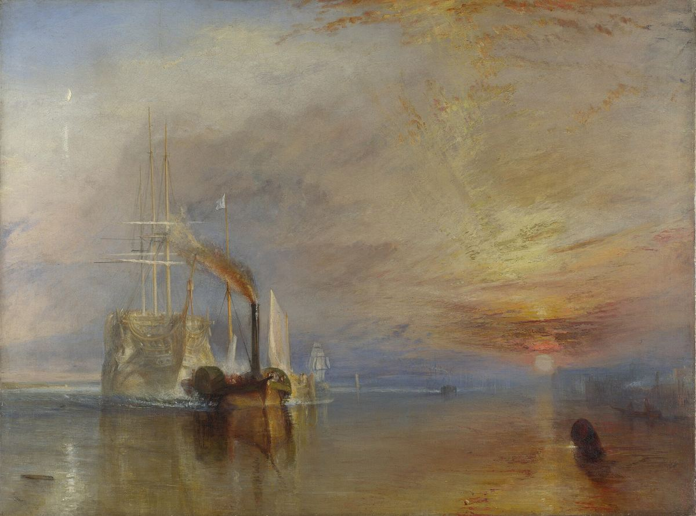

The Fighting Temeraire

Palette
- Taupe · your word: Taupe
- Sand · your word: Ash
- Camel · your word: Camel
- Raw umber · your word: Sepia
- Dim gray · your word: Taupe
- Café noir · your word: Umber
- Grey · your word: Grey
Turner painted the old warship in pale white and gold instead of its real black and yellow, so it fades into the sky like a ghost while the dark tug pulls it to the breakers. The warm sunset on the right faces the cool, silvery ship on the left. The National Gallery notes the sun is in an impossible place for a ship heading upriver, and that the sunset clouds are laid on so thickly that the paint stands proud of the canvas.
Image
Wikimedia Commons · Public domain

Hex values are screen approximations. Every page lists its sources.